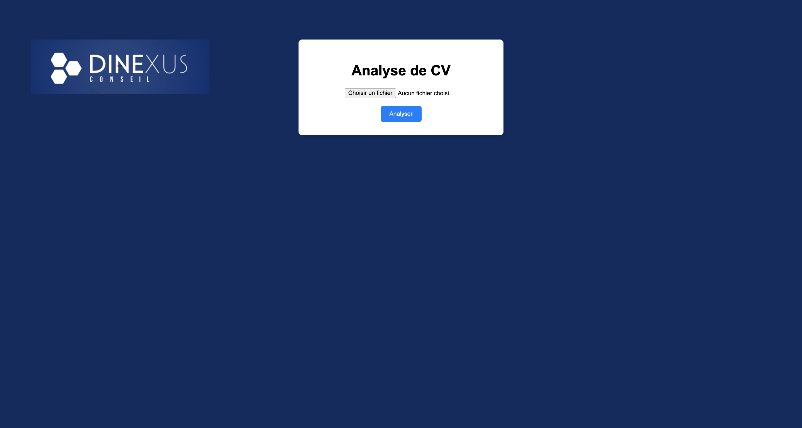
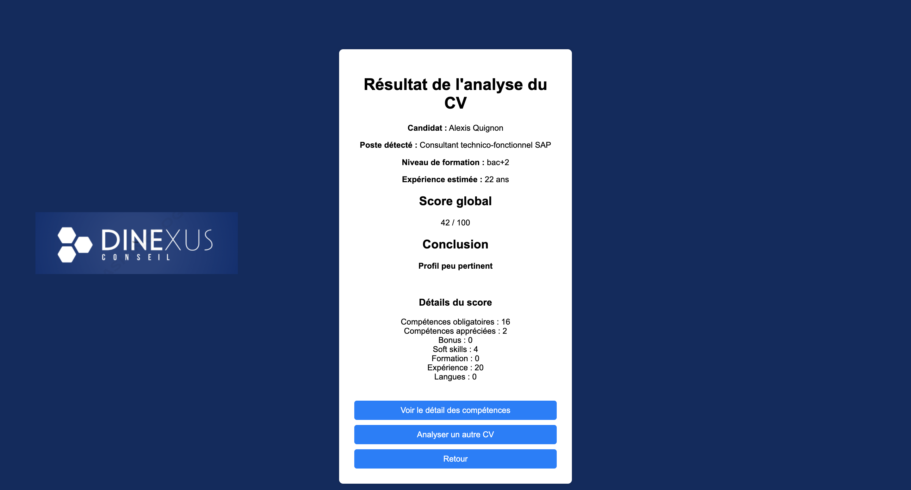
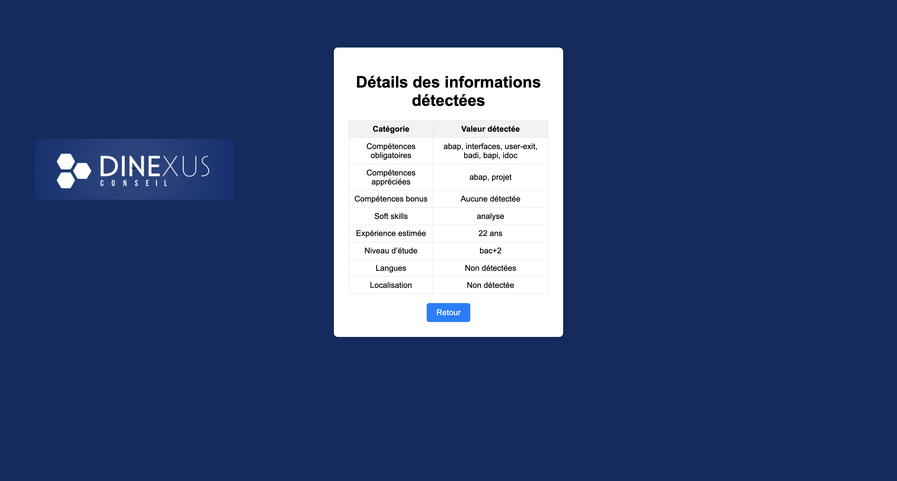

Projet de stage · Python · Flask
Analyse et évaluation de CV
Projet réalisé chez Ovie / Dinexus Conseil, cabinet de conseil spécialisé SAP.
Développement d’un outil destiné à faciliter le premier tri des candidatures. L’application extrait les informations principales d’un CV, les compare à une fiche de poste et calcule un score à partir de règles métier.
- Python
- Flask
- pdfplumber
- Regex
- JSON
- HTML/CSS
Voir le projet sur GitHub
Code source non public — présentation et captures disponibles sur GitHub.


